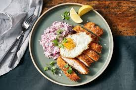
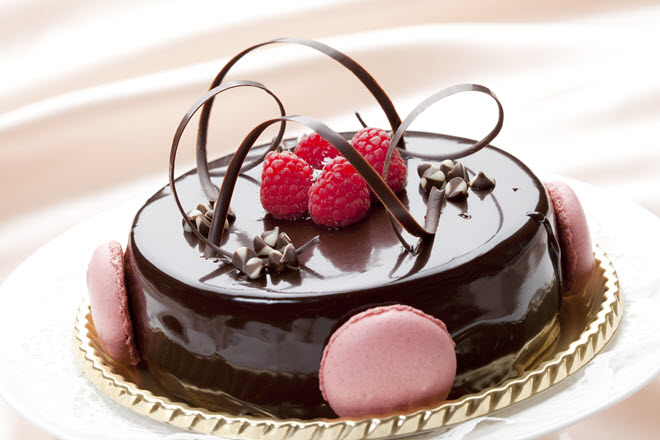

About Our Trade
The culinary trade teaches students the skills and abilities they need to work in commercial kitchens. It helps people learn the arts of cooking and preparing food and desserts.

The culinary trade teaches students the skills and abilities they need to work in commercial kitchens. It helps people learn the arts of cooking and preparing food and desserts.
In culinary, students work on making foods and getting used to the work enviroment. They practice following recipes and making food for the teachers. Taking this trade can help with becoming aspiring chef. When taking this trade
The resources that are provided include an indepth education and the tools needed to make it in this industry. These tools can include stoves, cooking utensils and more.
Hello, my name is C.J. and I chose the culinary trade because I find cooking fun and interesting. Culinary Arts focuses on a general overview of the culinary industry. The highest paying job in this trade is a private chef with $90,585 as a yearly average
.jpeg)